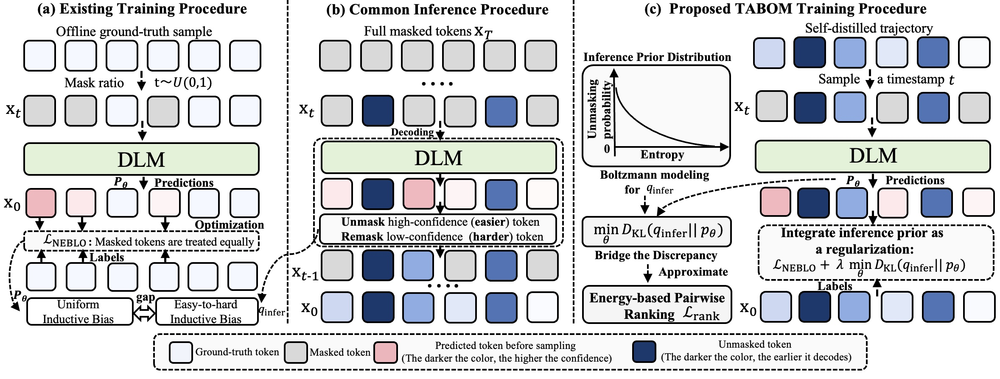
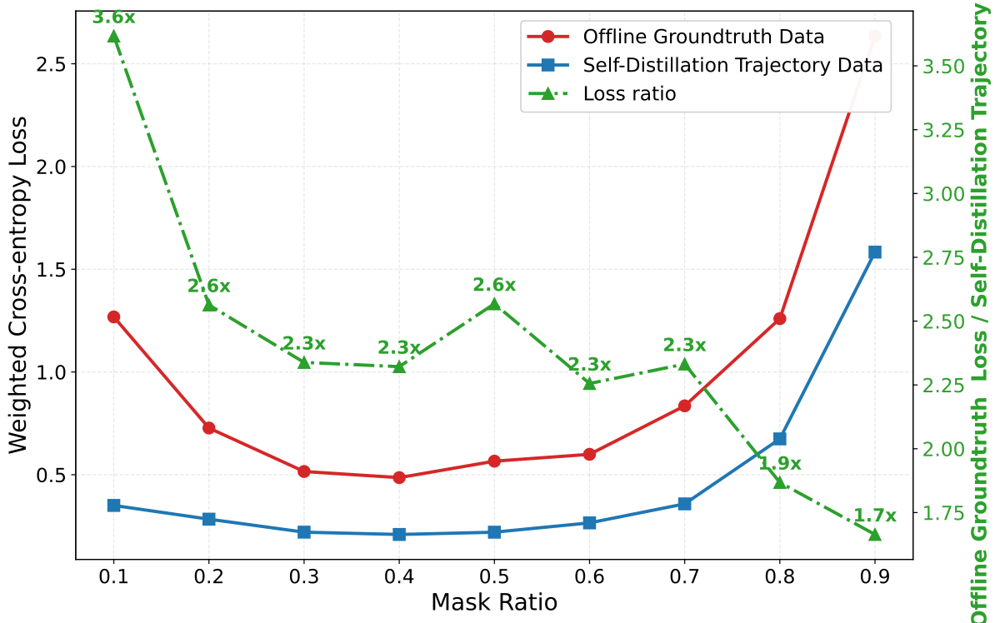
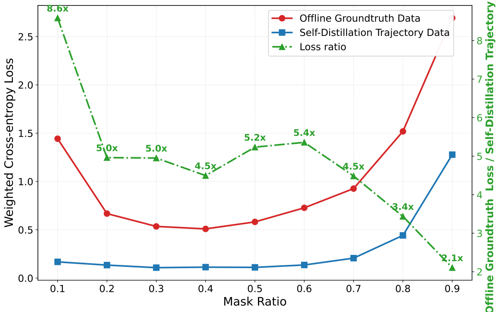
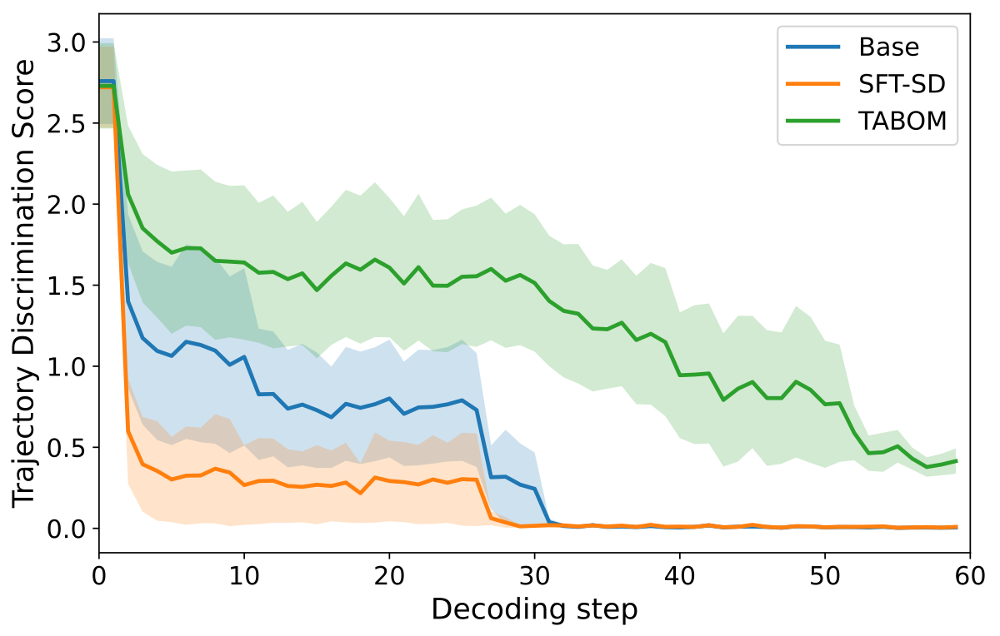
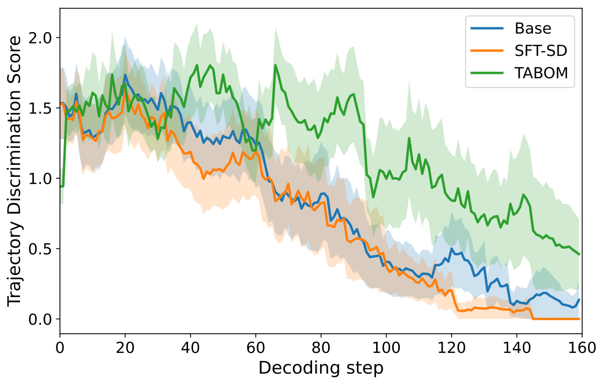

🚀 Diffusion Language Models generate text by progressively unmasking tokens, usually from easy tokens to hard tokens. However, standard supervised fine-tuning still trains them as if all masked tokens were equally important and equally difficult. TABOM fixes this training-inference mismatch by learning from the model's own self-distilled decoding trajectories and adding a ranking objective that teaches the model which tokens should become confident earlier.
✅ The result is a post-training recipe that turns self-distilled trajectories into real capability gains, rather than using them only for faster sampling.
Diffusion Language Models (DLMs) have recently emerged as a promising alternative to autoregressive language models, offering stronger global awareness and highly parallel generation. However, post-training DLMs with standard Negative Evidence Lower Bound (NELBO)-based supervised fine-tuning remains inefficient: training reconstructs randomly masked tokens in a single step, whereas inference follows a confidence-guided, multi-step easy-to-hard denoising trajectory. Recent trajectory-based self-distillation methods exploit such inference trajectories mainly for sampling-step compression and acceleration, often improving decoding efficiency without substantially enhancing the model's underlying capability, and may even degrade performance under full diffusion decoding.
We propose Trajectory-Aligned Optimization via Boltzmann Modeling (TABOM), a self-distilled trajectory-based post-training framework that aligns training with the easy-to-hard structure of inference. TABOM models the inference unmasking preference as a Boltzmann distribution over predictive entropies and derives a tractable pairwise ranking objective to align the model's certainty ordering with the observed decoding trajectory. Empirically, TABOM achieves substantial gains in new domains, expands the effective knowledge boundary of DLMs, and significantly mitigates catastrophic forgetting compared with standard SFT.
🔍 The key difficulty is a hidden mismatch between training and inference. During NELBO-style SFT, a DLM receives a randomly masked sequence and is asked to reconstruct all masked tokens in one shot. This objective is simple and scalable, but it implicitly treats all masked positions uniformly. In other words, a very easy token and a very hard token contribute to the same reconstruction objective without considering their order in the actual decoding process.
⚡ Inference behaves very differently. A DLM does not recover all tokens at once. It repeatedly estimates token confidence or entropy, unmasks a subset of high-confidence tokens, and then uses these newly recovered tokens as context for later decisions. This creates an easy-to-hard trajectory: easy tokens should become certain first, while difficult tokens are resolved later with richer context.
💡 Self-distilled trajectories are attractive because they lie on the pretrained model's own distributional manifold. But if we still train them with a uniform reconstruction loss, the model sees the trajectory data without learning the ordering preference behind the trajectory. This is the central issue TABOM targets.
📉 Our preliminary diagnostics compare offline ground-truth SFT and self-distilled SFT across code generation and mathematical reasoning. The observation is consistent: self-distilled trajectories reduce the optimization barrier and help avoid catastrophic forgetting, but they still provide only marginal gains when trained with the same NELBO objective. The bottleneck is not only the data source, but also the training objective.


🧭 TABOM keeps the useful part of self-distillation while changing what the model is asked to learn. Instead of only reconstructing tokens from trajectory states, it also learns the relative certainty ordering encoded by the trajectory. Intuitively, if token A is decoded before token B in an entropy-guided trajectory, the model should assign token A lower entropy than token B under the corresponding context.
As a foundation, TABOM uses self-distilled trajectory states as reconstruction contexts instead of relying only on uniformly random masks. The key difference, however, is not just the data: TABOM explicitly models and optimizes the inference-time ordering preference.
🔥 We view the easy-to-hard unmasking behavior as a probability distribution over possible unmasked states. States containing easier, lower-entropy tokens should receive higher probability. TABOM formalizes this preference as a Boltzmann distribution over predictive entropies, turning training-inference alignment into a principled distribution matching problem.
🎯 Ideally, training should make the model-induced unmasking distribution match the Boltzmann target above. This gives a KL alignment objective:
Directly optimizing this KL objective is intractable because it requires sampling from the global target distribution and computing the partition function. TABOM therefore derives a local pairwise ranking loss that shapes the entropy landscape so that earlier decoded tokens become more certain than later decoded tokens within a local timestep window.
✨ This local ranking view is important in practice. Comparing tokens decoded at vastly different stages can be noisy because their difficulties are inherently different. TABOM therefore ranks tokens inside a local decoding window, which better matches the step-wise nature of diffusion inference.
We evaluate TABOM on Dream-7B-Instruct and LLaDA-8B-Instruct across two post-training domains: code generation and mathematical reasoning. Each fine-tuned model is evaluated not only on its in-domain tasks, but also on out-of-distribution tasks. This matters because standard SFT can improve a target domain while damaging the pretrained model's broader capabilities.
| Method | In-Domain | Out-of-Distribution | |||||
|---|---|---|---|---|---|---|---|
| HumanEval | MBPP | Avg. | GSM8K | MATH500 | IFEval | Avg. | |
| Base Model: Dream-7B-Instruct | |||||||
| No-SFT | 52.66 | 58.00 | 55.33 | 81.41 | 39.80 | 56.56 | 59.26 |
| SFT-GT | 61.55 | 58.00 | 59.78 | 52.33 | 32.40 | 46.21 | 43.65 |
| SFT-SD | 53.66 | 59.20 | 56.43 | 81.81 | 41.60 | 57.10 | 60.17 |
| dInfer | 57.31 | 58.20 | 57.76 | 81.88 | 39.80 | 57.30 | 59.66 |
| T3D | 55.48 | 58.70 | 57.09 | 81.84 | 40.70 | 57.20 | 59.91 |
| TABOM | 60.36 | 60.60 | 60.48 | 81.73 | 42.40 | 55.45 | 59.86 |
| Base Model: LLaDA-8B-Instruct | |||||||
| No-SFT | 36.01 | 39.20 | 37.61 | 76.12 | 36.20 | 33.08 | 48.47 |
| SFT-GT | 42.01 | 32.80 | 37.41 | 70.73 | 35.40 | 34.93 | 47.02 |
| SFT-SD | 39.63 | 38.80 | 39.22 | 76.95 | 35.80 | 32.90 | 48.55 |
| dInfer | 41.46 | 38.60 | 40.03 | 77.33 | 36.60 | 33.82 | 49.25 |
| T3D | 40.54 | 38.70 | 39.62 | 77.14 | 36.20 | 33.36 | 48.90 |
| TABOM | 42.68 | 40.00 | 41.34 | 77.33 | 38.20 | 34.19 | 49.91 |
| Method | In-Domain | Out-of-Distribution | |||||
|---|---|---|---|---|---|---|---|
| GSM8K | MATH500 | Avg. | HumanEval | MBPP | IFEval | Avg. | |
| Base Model: Dream-7B-Instruct | |||||||
| No-SFT | 81.41 | 39.80 | 60.61 | 52.66 | 58.00 | 56.56 | 55.74 |
| SFT-GT | 80.12 | 37.40 | 58.76 | 46.34 | 58.00 | 53.23 | 52.52 |
| SFT-SD | 81.95 | 39.80 | 60.88 | 57.92 | 58.60 | 56.01 | 57.51 |
| dInfer | 82.33 | 41.60 | 61.97 | 56.11 | 58.80 | 55.82 | 56.91 |
| T3D | 82.14 | 40.70 | 61.42 | 57.01 | 58.70 | 55.91 | 57.21 |
| TABOM | 84.31 | 41.10 | 62.71 | 58.54 | 59.20 | 56.19 | 57.98 |
| Base Model: LLaDA-8B-Instruct | |||||||
| No-SFT | 76.12 | 36.20 | 56.16 | 36.01 | 39.20 | 33.08 | 36.10 |
| SFT-GT | 74.29 | 35.50 | 54.90 | 31.09 | 40.60 | 26.98 | 32.89 |
| SFT-SD | 75.96 | 35.70 | 55.83 | 36.58 | 39.80 | 34.38 | 36.92 |
| dInfer | 76.72 | 36.50 | 56.61 | 38.90 | 39.40 | 34.38 | 37.56 |
| T3D | 76.34 | 36.10 | 56.22 | 37.74 | 39.60 | 34.38 | 37.24 |
| TABOM | 78.62 | 36.80 | 57.71 | 40.30 | 40.10 | 32.98 | 37.79 |
🏆 TABOM consistently achieves the strongest in-domain average across both base models and training domains. More importantly, it preserves or improves OOD performance, avoiding the catastrophic forgetting often observed when standard SFT is applied to new-domain data.
📌 The table highlights the main story of the paper. SFT-SD is safer than ground-truth SFT because it stays closer to the pretrained model's manifold, but its gains are often small. TABOM keeps this stability while turning the self-distilled trajectories into larger performance improvements.
🔬 To check whether a model really learns the easy-to-hard structure, we introduce Trajectory Discrimination Score (TDS). At each decoding step, TDS measures the variance of predictive entropy across currently masked tokens. A high TDS means the model assigns clearly different uncertainty levels to different tokens; a low TDS means the model treats masked tokens almost uniformly.


Higher TDS indicates stronger discrimination between easy and hard tokens at the same decoding step. TABOM produces a more discriminative entropy landscape, providing mechanism evidence that its gains come from better trajectory alignment rather than simply reusing self-generated samples.
✅ In other words, TABOM does not merely expose the model to more intermediate states. It changes the shape of the model's uncertainty landscape so that the learned model behaves more like the inference process it will actually use.
@article{chen2026tabom,
title={Self-Distilled Trajectory-Aware Boltzmann Modeling: Bridging the Training-Inference Discrepancy in Diffusion Language Models},
author={Chen, Kecheng and Liu, Ziru and Tao, Xijia and Liu, Hui and Liu, Yibing and Fu, Xinyu and Wu, Shi and Zhang, Suiyun and Tu, Dandan and Kong, Lingpeng and Liu, Rui and Li, Haoliang},
journal={arXiv preprint},
year={2026}
}Real-time visitor origins (powered by Clustrmaps).